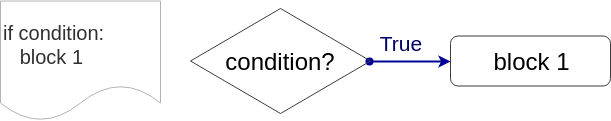
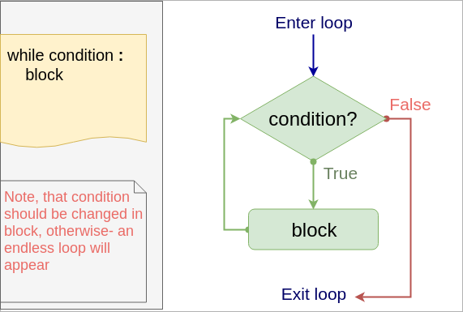
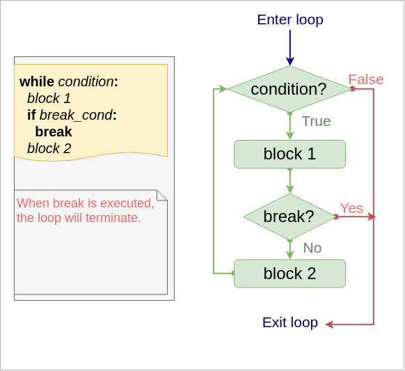
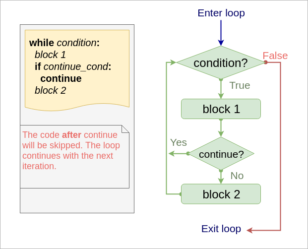

Keyboard shortcuts:
N/СпейсNext Slide
PPrevious Slide
OSlides Overview
ctrl+left clickZoom Element
If you want print version => add '
?print-pdf' at the end of slides URL (remove '#' fragment) and then print.
Like: https://wwwcourses.github.io/...CourseIntro.html?print-pdf
Comparison operators.
Logical (Boolean) operators.
Control Flow Statements. Loops.
Created for

Iva E. Popova, 2024,

Boolean type
Overview
- Most programming languages define a Boolean type, which represents the truth values of logic and Boolean algebra (named after George Boole).
- The Boolean data type consists of only 2 values:
- True
- False
- Note, that these are not variables names, but values like 0 and 1!
- Boolean values in Python are used mainly in the Conditional Statements. They are the returned value of the Comparison Operators.
>>> print( type(True) )
<class 'bool'>
>>> print( type(False) )
<class 'bool'>
What is True/False in Python?
True/False values for most of the build-in objects:
| Type: | =False | =True |
|---|---|---|
| any numeric type | 0 (zero) | everything else |
| string | "" | any non-empty string |
| sequences and collections | empty | any non empty |
What is True/False in Python - the bool() check
Using the built-in function bool(), we can convert any Python value to True or False
>>> bool(-42)
True
>>> bool(0)
False
>>> bool(0.00001)
True
>>> bool("ada")
True
>>> bool("")
False
Comparison operators
Comparison operators
intro
- With Comparison Operations we can check if 2 or more values are equal or if a value is less than other, and so on.
- The result of a Comparison Operation is True/False
- Comparing objects of different types, except different numeric, will raise a TypeError in Python3! (Can not compare "apples" with "oranges")
>>> 2 < 1
False
>>> 2 < "1"
...
TypeError: '<' not supported between instances of 'int' and 'str
the operators
| Operation | Meaning |
|---|---|
< |
strictly less than |
<= |
less than or equal |
> |
strictly greater than |
>= |
greater than or equal |
== |
equal |
!= |
not equal |
is |
object identity* |
is not |
negated object identity* |
*The identity of an object uniquely identifies where this object is stored in the computer memory.
It will be discussed deeply in the OOP part of the course
examples
>>> i = 5
>>> i < 5
False
>>> i <= 5
True
>>> 9 < 1000
True
>>> "9" < "1000"
False
Note, the last example: "9" < "1000", the result is False, because strings are compared lexicographically.
lexicographical comparison
- Symbols are compared by their position (codepoint) according to the character code table used.
- First the first two items are compared, and if they differ this determines the outcome of the comparison.If they are equal, the next two items are compared, and so on, until either sequence is exhausted.
So, why "9" < "1000" returns False?
- If we use the ASCII Codes Table, we see that the ASCII code point for "9" is 57, and for "1" - 49.
- So, Python compares
57 < 49and as the result is False it returns False for the whole expression - You can get the code point for a one-character string using the built-in
ord()function
Comparison operator Chaining
- Comparison operators in Python can be chained, instead of combining them with logical 'and'
x = 5
# equivalent of: 0<x and x<10:
print(0<x<10)
Logical (Boolean) operators
Logical (Boolean) operators
Overview
- Logical operations are used to combine simple comparison operations into more sophisticated.
- Like "if the user is adult AND the user is from Bulgaria"
| Operation | Name | Result |
|---|---|---|
| x or y | Logical OR | if x is false, then y, else x |
| x and y | Logical AND | if x is false, then x, else y |
| not x | Logical NOT | if x is false, then True, else False |
- where
xandyare expressions - and and or returns one of their operands. I.e. not necessary boolean type.
- not always returns boolean value
| x | y | AND x and y |
OR x or y |
NOT not x |
|---|---|---|---|---|
| T | T | T (y) | T (x) | F |
| T | F | F (y) | T (x) | F |
| F | T | F (x) | T (y) | T |
| F | F | F (x) | F (y) | T |
Legend: T - true; F - false
Examples
>>> True and False
False
>>> 0 and 1
0
>>> 0 or 1
1
>>> 1 or 0
1
>>> not 1
False
>>> not 0
True
More examples
user_name=''
user_age = 15
user_country = 'BG'
print(user_age>18 and user_country=='BG')
print(user_age>18 or user_country=='BG')
# note that the value of logical operations is not always True/False
print(user_name and 'Anonymous' )
print(user_name or '***Anonymous***' )
False
True
***Anonymous***
Control Flow Statements
Control Flow Statements
Overview
- Normal control flow of a Python program defines that statements are executed one after another, as written in code.
- The Control Flow statements allows our program to react in one way, if some condition is True, or in another way, if it's False.
if statement
if statement
Syntax
{kind=link}
- Condition can be any expression, which is evaluated to True/False (remember What is True/False in Python )
- In Python, to encompass the statements which forms a block, you do not need to put any braces, but each statement have to be indented with the same amount of spaces!
if condition :
block 1
x = 42
if x % 2 == 0:
print("{} is an even number!".format(x))
example - align matters
if False :
print("1")
print("2")
print("3")
print(1)andprint(2)forms a block, which will be executed, only if the condition is true.- But
print(3)is not in the block, and will be always executed!
if - else statement
Syntax
if condition :
block 1
else :
block 2
{kind=link}
example - even/odd number
x = 41
if x % 2 == 0:
print("{} is an EVEN number!".format(x))
else:
print("{} is an ODD number!".format(x))
# OUTPUT
# 41 is an ODD number!
example - hello in BG
user_lang = "bg"
if user_lang == "bg":
print("Здравейте")
else:
print("Hello")
print("-" * 20)
Здравейте
--------------------
if - elif - else statement
Syntax
if c1 :
block 1
elif c2:
block 2
else:
block 3
{kind=link}
- We can have more than one elif statement, as shown in next examples!
example - multinational hello
user_lang = "it"
if user_lang == "bg":
print("Здравейте")
elif user_lang == "it":
print("Ciao")
elif user_lang == "en":
print("Hello")
else:
print("I do not speak your language!")
print("-" * 20)
Loops (cycles)
What are loops (cycles)?
- Loops are control statements which allows a block of code to be executed multiple times.
- This repetition of a code can be fixed number of times (for loop) or while some condition is fulfilled (while loop).
- Each execution of the code, during the loop, is called an iteration!
while loop
while loop
Syntax
while condition :
block
- The block will be executed while the condition is True!
- Inside the block we have to change the variable used in condition to prevent an endless loop. Or we can use
breakstatement (discussed further)
Flow
{kind=link}
Simple example
i = 1
while i<=5 :
print(i)
i += 1
1
2
3
4
5
This is just a simple example. For fixed numbers of times loops, it is better to user for with range loop, which will be discussed next
Example: endless loop (find the problem)
If you run next code, your Python will run an endless loop. Use CTRL+C or CTRL+Z to stop it
# print the numbers from 10 to 1:
i = 10
while i>=1 :
print(i)
i = 1
Example: proper use case of while
While loop is suitable, when we do not know in advance the number of iterations needed
# ask user to enter a name (string), until it contains at least 3 symbols
# the len function on string returns the number of symbols in a string
user_name = input("Enter a name, please: ")
user_name_length = len(user_name)
while user_name_length < 3:
user_name = input("Enter a name (at least 3 symbols): ")
user_name_length = len(user_name)
print("Thank you, {}!".format(user_name))
Example: sum all numbers in [1..100]
- Note, that this is just an example to illustrate the syntax and algorithm.
- Same task is better to be implemented with
forloop, or even better: with built-in function sum()
i = 1
total_sum = 0
while i <= 100:
total_sum += i
i += 1
print("total_sum = ", total_sum)
# total_sum = 5050
total_sum = sum(range(1,101))
print("total_sum = ", total_sum)
# total_sum = 5050
for loop
for loop
Syntax
for item in sequence :
#do something with item
- Example:
- Python
forstatement is different than the "C-based"forloops in other popular languages (C#, Java, PHP, JavaScript) - In Python,
forstatement iterates over the items of any sequence. - This is common to
foreachloop concept in above-mentioned languages
for s in "ada":
print(s.capitalize())
# A
# D
# A
Flow

Examples
### loop on list items:
for item in [1,2,3]:
print(item, end=",") # 1,2,3,
### loop on tuple items:
for item in (10, "December", 1985):
print(item, end=",") # 10,December,1985,
### loop on string items:
for item in "byron":
print(item, end=",") # b,y,r,o,n,
### loop on range items:
for item in range(1,3):
print(item, end=",") # 1,2,
More Examples
- Iterate over range of numbers:
- Sum numbers in range (1,10):
- For Loop with Dictionary:
- For Loop with Tuple Unpacking
for n in range(1,6):
print(n, end=",") # 1,2,3,4,5,
total_sum = 0
for n in range(1,11):
total_sum+=n
print(f'total_sum={total_sum}') # total_sum=55
person = {"name": "John", "age": 30, "country": "UK"}
for key, value in person.items():
print(f"{key}: {value}")
# name: John
# age: 30
# country: UK
pairs = [(1, 'one'), (2, 'two'), (3, 'three')]
for number, name in pairs:
print(f"{number} is {name}")
# 1 is one
# 2 is two
# 3 is three
Loop on indexes of sequence: C-style
- As we saw, Python doesn't have C-style for loop, but we can emulate it.
- Note, that this is not the Pythonic way of looping on sequence by index.
- To iterate over a sequence with index and value, we can use the built-in enumerate(iterable, start=0) function:
- this is the Pythonic way.
colors = ["red", "green", "blue"]
for index in range(len(colors)):
print(f"{index}: {colors[index]}")
# 0: red
# 1: green
# 2: blue
colors = ["red", "green", "blue"]
for index, color in enumerate(colors):
print(f"{index}: {color}")
# 0: red
# 1: green
# 2: blue
Nested for loops
- We can nest a for loop into another:
- And iterate over nested lists:
for i in [1,2,3]:
for j in "abv":
print(f'{i}:{j}', end=" ")
print() # prints new line
# 1:a 1:b 1:v
# 2:a 2:b 2:v
# 3:a 3:b 3:v
matrix = [
[1, 2, 3],
[4, 5, 6],
[7, 8, 9]
]
for row in matrix:
for element in row:
print(element, end=' ')
print() # new line after each row
# 1 2 3
# 4 5 6
# 7 8 9
break statement
break statement
Syntax
- The break statement in Python (like in other C-based languages) breaks out of the innermost enclosing
fororwhileloop. - The most common use for
breakis when some external condition is triggered to exit immediately from a loop. - The
breakstatement can be used in bothwhileandforloops.
while condition:
block 1
if break_cond:
break # loop is terminated, block 2 is skipped
block 2
for item in sequence :
block 1
if break_cond:
break # loop is terminated, block 2 is skipped
block 2
Flow
{kind=link}
Examples:
- Output letters in a string, until 'i' letter is reached:
- Using break to find an element in a list
str = "alibaba"
for s in str:
if s == "i":
break
print(s)
# a
# l
elements = ["apple", "banana", "cherry"]
target = "banana"
for el in elements:
if el == target:
print(f"Found {target}")
break
# Found banana
Example: Using break in nested loops
matrix = [
[1, 2, 3],
[4, 5, 6],
[7, 8, 9]
]
search_value = 4
for row in matrix:
print(f'Processing row: {row}')
for element in row:
print(element, end=',')
if element == search_value:
break # Breaks out of the inner loop
print() # print new line
# Processing row: [1, 2, 3]
# 1,2,3,
# Processing row: [4, 5, 6]
# 4,
# Processing row: [7, 8, 9]
# 7,8,9,
do-while emulation with break
- Python did not have
do-whileloop, as in other languages (reason: "There should be one - and preferably only one - obvious way to do it.", The Zen of Python) - But
do-whilestructure is useful when we need the body of thewhileloop to be executed at least ones. - General structure of a "do-while" loop, which did not exists in Python:
- But it can be easily emulated if needed
do {
# will be executed at least one
block
} while (condition);
while True:
block
if (condition): break
Example - do-while emulation with break
- Ask user to enter a name, until it contains at least 3 symbols
while True:
user_name = input("Enter a name (at least 3 symbols): ")
user_name_length = len(user_name)
if user_name_length > 3: break
print(f"Thank you, {user_name}!")
# Enter a name (at least 3 symbols): iv
# Enter a name (at least 3 symbols): a
# Enter a name (at least 3 symbols): ivan
# Thank you, ivan!
"switch-case" statement emulation for Python<3.10
- In oldest python versions you can emulate ""switch-case"" with multiple
if-elif-breakblocks - Another way is to use Python dictionaries which values are functions (will be discussed further)
# print program menu:
print("Select an action:")
print("1. Action 1")
print("2. Action 3")
print("3. Action 3")
print()
while True:
user_choice = int(input("Enter a number [0-4]: "))
if user_choice == 1:
print("Action 1 fired!")
break
elif user_choice == 2:
print("Action 2 fired!")
break
elif user_choice == 3:
print("Action 3 fired!")
break
else:
print('Wrong input!')
# Select an action:
# 1. Action 1
# 2. Action 3
# 3. Action 3
# Enter a number [0-4]: 7
# Wrong input!
# Enter a number [0-4]: 2
# Action 2 fired!
match statement
- Python 3.10 introduces match statement which is similar to "switch-case" in other languages
# print program menu:
print("Select an action:")
print("1. Action 1")
print("2. Action 3")
print("3. Action 3")
print()
while True:
user_choice = int(input("Enter a number [0-4]: "))
match user_choice:
case 1:
print("Action 1 fired!")
case 2:
print("Action 2 fired!")
case 3:
print("Action 3 fired!")
case _
print('Wrong input!')
# Select an action:
# 1. Action 1
# 2. Action 3
# 3. Action 3
# Enter a number [0-4]: 7
# Wrong input!
# Enter a number [0-4]: 2
# Action 2 fired!
continue statement
continue statement
- Returns the control to the beginning of the loop.
- code after continue will be skipped.
- Usually, continue statement is dependent on some condition. 
{kind=link}
Syntax
while condition:
block 1
if continue_cond:
continue # go to while condition
block 2
for item in sequence :
block 1
if continue_cond:
continue # continue loop with next item
block 2
Examples:
- print all numbers in [1..5], but skip 3:
- print letters in a word, excluding vowels:
for i in range(1,6):
if i == 3:
continue
print(i, end=',') # 1,2,4,5,
word = 'abcdefghi'
vowels = ['a', 'e', 'i', 'o', 'u']
for l in word:
if l in vowels:
continue
print(l, end=",")
# b,c,d,f,g,h,